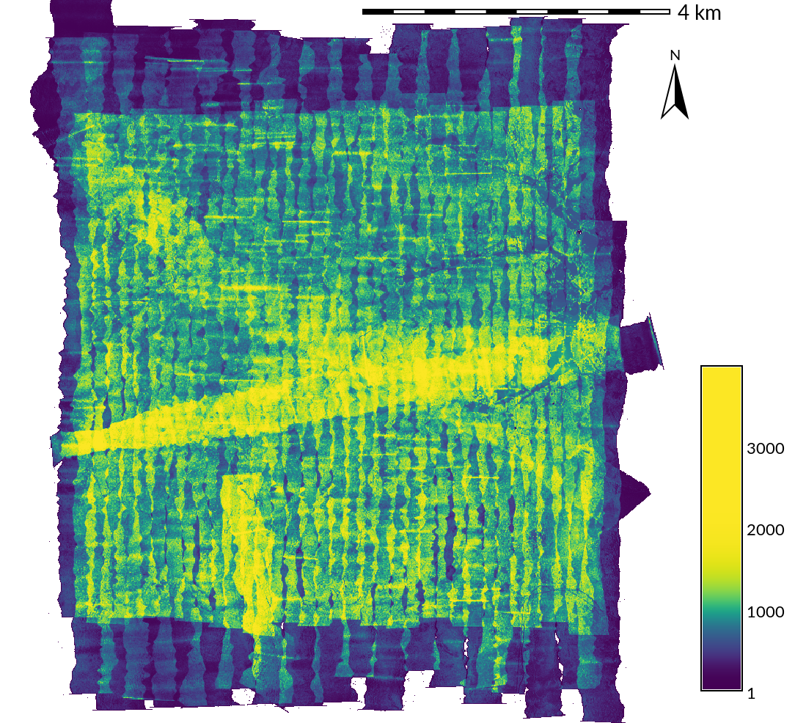

Dissertation Defense
Geospatial Analytics
for Point Clouds
in an Open Science Framework
Vaclav (Vashek) Petras
North Carolina State University
GeoForAll Lab
at
Center for Geospatial Analytics
April 23, 2018
Point Clouds
- set of points in 3D space
- “a lot of XYZ coordinates”
- sources
- airborne lidar
- terrestrial lidar
- SfM-derived (based on UAV imagery)
- short-range sensors
Point Cloud Usages
- flood modeling [e.g., Webster et al. 2010]
- wildfire fuel assessment [e.g., Gajardo et al. 2014]
- habitat characterization [e.g., Sasaki et al. 2016]
- land cover classification [e.g., Antonarakis et al. 2008]
- ...

Outline
- Point densities in point clouds
- Description of 3D vegetation structure
- Reproducibility and open science
- Go to codeocean.com
- Search for “petras”
- Select “Generalized 3D Fragmentation Index Derived From Lidar Point Clouds”
- Run the code

- Create an account (name, email, password + ToU & PP + confirmation email)
Point Densities in Point Clouds
Density Anomalies in Point Clouds (Chapter 2)Homogenization and Decimation of Point Clouds (Chapter 3)
Point Densities
- spatial distribution of points in a point cloud


natural and planted forest (transect) distinguished by vertical distribution of points
Use of Point Densities
- vegetation structure [e.g., Sasaki et al. 2016]
- subcanopy solar radiation [e.g., Bode et al. 2014]
- biomass estimation [e.g., Calders et al. 2015]
- leaf area density distribution [e.g., Oshio et al. 2015]
- crown density [e.g., Dalponte et al. 2009]
- ...
Questions
-
What are the different density anomalies and associated issues?
- Issue for density-dependent products, processing speed, …
- What are their causes and solutions?
Airborne Lidar Example: Scan Line Densities
- issue: high density at the end of the line
- cause: mechanics of the scanner
- associated elevation error: may indicate low quality points
detail of an end of scan line
Airborne Lidar Example: Swath Overlaps
- issue: doubled density
- cause: necessary swath overlaps
- associated elevation error: may indicate abrupt changes in elevation

point density of a complete survey
Airborne Lidar Example: Banding
- issue: doubled density
- cause: necessary swath overlaps
- associated elevation error: may be associated with bended elevations

density waves (banding)
SfM-Derived Point Cloud Example
- issue: high density of points for vegetation, but ground missing
- cause: images capture only top of canopy
vertical point distribution in lidar and SfM-derived point clouds
Terrestrial Lidar Example: Overall Point Distribution
- issue: different density and vertical distribution of points
- cause: each method produces point clouds with very different properties
- associated processing challenge: increased processing time
terrestrial lidar (raster resolution 0.5 m, red color used for 80 to 18 thousand points per cell)
Homogenization & Decimation
- decimation ~ thinning ~ sampling
- makes the point cloud smaller, more manageable
- count-based decimation: preserves variations in density
- grid-based decimation ~ binning: removes variations in density

original point cloud count-based decimation grid-based decimation
Questions
- Which decimation performs better for topography and microtopography?
- How does this change with the point cloud acquisition method?
- Are the simplest decimations enough? Or do we need to use slower but more sophisticated techniques?
Evaluating Level of Detail
- microtopography [e.g., Watt 1947]: small variations in topography
- local relief model [Hesse 2010]: features other than trend

sub-meter features: 30-60cm wide, 30cm deep, 60m long gully and tillage (resolution 30cm)
Influence of Grid-Based Decimation Resolution


 grid size: 0.1 m → 0.3 m → 0.9 m → 1.5 m
grid size: 0.1 m → 0.3 m → 0.9 m → 1.5 m
(points removed: 0 % → 81 % → 98 % → 99 %)
Removing Points
Airborne Lidar
- count-based and grid-based decimations are equivalent

Terrestrial Lidar
- grid-based decimation performs better

Contributions
- identification of density anomalies, their causes, resulting issues, and solutions
- significant decimation is possible with (micro)topography preserved
- with data from all 4 tested sensors
- faster and simpler count-based decimation more advantageous
- in most cases count-based decimation provided same results as grid-based decimation
- needed when relative density needs to be preserved
- more complex grid-based decimation needed for specific cases
- beneficial for terrestrial lidar data
- beneficial for homogenization
Publications
Published
Petras, V., A. Petrasova, J. Jeziorska, and H. Mitasova (2016). Processing UAV and lidar point clouds in GRASS GIS. In: ISPRS-International Archives of the Photogrammetry, Remote Sensing and Spatial Information Sciences XLI-B7, p. 945–952. DOI 10.5194/isprs-archives-XLI-B7-945-2016[675 reads on ResearchGate, Apr 16, 2018]
To Be Submitted
Density anomalies in point clouds (Chapter 2).Target journal: MDPI Remote Sensing
Software
- extended GRASS GIS module for binning (r.in.lidar)
- created GRASS GIS module for binning in 3D (r3.in.lidar)
- created module for count- and grid-based decimation (v.decimate)
- extended GRASS GIS module for point cloud import (v.in.lidar)
- local relief model implementation for GRASS GIS (r.local.relief)
- point cloud transect (v.profile.points)
Educational Material
Processing lidar and UAV point clouds in GRASS GIS
available online
(and translated to Spanish by GRASS GIS community).
Training
Workshop at FOSS4G 2017 in Boston,Center for Geographic Analysis, Harvard University.
Description of 3D Structure
in Lidar Point Clouds
Generalized 3D Fragmentation Index Derived from Lidar Point Clouds (Chapter 4)
Lidar Point Clouds
- lidar penetrates vegetation (not only top of canopy)
- points in the vegetation (not only ground points)
- vegetation-related applications
- habitat characterization [e.g., Sasaki et al. 2016]
- fuel modeling [e.g., García et al. 2011]
- tree models [e.g., Gorte & Winterhalder 2004]
- ...
- challenging to process (large, unstructured, 3D)

Questions
- Is 3D raster representation appropriate for lidar data analysis?
- How to derive and describe 3D structure captured in lidar point clouds?
- Is a 2D landscape index extensible and applicable to 3D vegetation structure?
3D Raster

voxel-based (cube-based) representation of space
2D Forest Fragmentation Index

forested areas
2D Forest Fragmentation Index

forest fragmentation index [Riitters et al. 2000]
Generalized Fragmentation Index

assignment of fragmentation classes
[Riitters et al. 2000], generalized
- number of occupied cells in moving window
- number of partially occupied cell pairs in moving window
- number of fully occupied cell pairs in moving window
- generalized equations for 3D
- 3D moving window
- interior limit added
- interior based on circle equation
- customizable limits (classes)
- used for vegetation scale, not landscape scale
Point Cloud and Presence Profiles
slice of raw point cloud and slice of 3D raster with cells marked as presence or absence
Point Cloud and Index Profiles

slice of raw point cloud and slice of fragmentation index 3D raster
Fragmentation Index 3D Raster

profiles of the fragmentation index 3D raster
3D Raster as 2D Rasters
- using count of cells of the same class for each vertical column
relative count of perforated and interior* class cells in a vertical column
*under top of the canopy
Comparison with Point Density
- Index is based on presence, absence, and spatial distribution of points.
- Is there any difference between the most common index class and density?
most common class in vertical column and point density
Contributions
- 3D raster representation is suitable for lidar data analysis of vegetation structure
- 2D remote sensing and landscape ecology concepts can be applied in 3D
- generalized 3D fragmentation index is now available
- aggregation method resulting in a 2D raster is also available
Publication
Petras, V., D. J. Newcomb, and H. Mitasova. 2017. Generalized 3D fragmentation index derived from lidar point clouds. In: Open Geospatial Data, Software and Standards 2(9). DOI 10.1186/s40965-017-0021-8[Accessed 1351 times at SpringerOpen, Apr 16, 2018]
Software
- 3D fragmentation index (r3.forestfrag)
- revised 2D fragmentation index (r.forestfrag)
- dominant fragmentation class (r3.count.categories)
- profile/slice of a 3D raster (r3.profile)
- 3D scatter plot of 3D raster (r3.scatterplot)
- 3D scatter plot of 2D raster (r.scatterplot)
A Publication Framework
for Open Science
A Framework for Open Geospatial Science (Chapter 6)
Integrating Free and Open Source Solutions into Geospatial Science Education (Chapter 7)
Reproducibility of Computational Articles
Stodden et al. (PNAS, March 13, 2018)
204 computational articles from Science in 2011–2012
 Stodden, V., Seiler, J., & Ma, Z. (2018).
An empirical analysis of journal policy effectiveness for computational reproducibility.
In: Proceedings of the National Academy of Sciences
115(11), p. 2584-2589.
DOI 10.1073/pnas.1708290115
Stodden, V., Seiler, J., & Ma, Z. (2018).
An empirical analysis of journal policy effectiveness for computational reproducibility.
In: Proceedings of the National Academy of Sciences
115(11), p. 2584-2589.
DOI 10.1073/pnas.1708290115
Science and Software
- code part of method description [Ince et al. 2012, Morin et al. 2012, Nat. Methods 2007]
- use of open source tools part of reproducibility [Less 2012, Alsberg & Hagen 2006]
- easily reproducible result reproduced in 10 minutes [Schwab et al. 2000]
State of the Art
- binary
- not flexible, not transparent
- source code
- not enough by itself
- Thanks for that GitHub link.
What does it do? [Nabors 2016]
- code repository
- easy to delete (e.g GitHub) [Bergman 2012]
- virtual machine [e.g., Gent 2013]
- too cumbersome (large files, not descriptive)
- web service
- somebody needed to keep it running
Questions
- How to ensure reproducibility of geospatial research with many software dependencies?
- Where to publish source code so it is preserved?
- How to publish geospatial software so it is reusable inside and outside of academia?
- How to identify a suitable software platform for building and publishing research code?
Use Case
Petras et al. 2017
Petras, V., Newcomb, D. J., & Mitasova, H. (2017). Generalized 3D fragmentation index derived from lidar point clouds. In: Open Geospatial Data, Software and Standards 2(1), 9. DOI 10.1186/s40965-017-0021-8
Publication Framework
| Component | in the Petras et al. 2017 use case |
|---|---|
| Text | background, methods, results, discussion, conclusions, … |
| Data | input data (formats readable by open source software) |
| Reusable code | methods as GRASS GIS modules (C & Python) |
| Publication-specific code | scripts to generate results (Bash & Python) |
| Computational environment | details about all dependencies and the code (Docker, Dockerfile) |
| Versions | repository with current and previous versions* (Git, GitHub) |
* Version associated with the publication included also as a supplemental file.
Publication-Specific Code
- creates exact results as published in the paper
- works with specific input data
- Petras et al. 2017: Bash and Python scripts
Reusable Code
- new software for reuse
- flexible reproducibility and replicability
- works with any data
- Petras et al. 2017: GRASS GIS modules (C and Python)
Computational Environment and Reproducibility
- Computational environment: all dependencies specified and provided
- Docker (used in Petras et al. 2017):
- similar to virtual machine: isolated & self-contained environment
- lightweight & efficient
- all dependencies described in a text file (Dockerfile)
Repository linked from Petras et al. 2017 gives two steps for building the environment and running the code:
docker build -t forestfrag3d https://github.com/wenzeslaus/forestfrag3d.git docker run --rm -v /home/.../ffdata:/data -it forestfrag3d /code/run.shgithub.com/wenzeslaus/forestfrag3d
Reproducibility
- executing the code gives all results for the paper

Data-driven figures reproduced using the repository associated with Petras et al. 2017 paper
Reproducibility
- finished recomputation at Code Ocean
 Results in the Interface tab:
codeocean.com/2018/04/21/generalized...clouds/interface
Results in the Interface tab:
codeocean.com/2018/04/21/generalized...clouds/interface
Usual runtime is around 27 min.
Software Platform
- Reusable code component needs a place to survive and thrive.
- Maintenance and distribution of reusable code is time consuming.
- A software platform needed as a common place for long-term maintenance and distribution to facilitate reuse.
- Platform evaluation criteria:
- Does the contributed scientific code survive over time?
- How much original research is in the software?
- How easy is it for a user to inspect the underlying code?
- Are preprocessing, visualization, and user interface included?
- …
Contributions
- general publication framework for open science
- components: text, data, reusable code, publication-specific code, computational environment, versions
- concept of software platform for publishing and preserving scientific code
- criteria: license, code authorship & sustainability, integration, …
- candidates & examples: R, Octave, GRASS GIS, LANDIS-II, …
- general, but addressing specific challenges of geospatial science
- research has many software dependencies
- software reused outside of academia
- support for visualization, data formats, …
Publications
Published
Petras, V., A. Petrasova, B. Harmon, R. K. Meentemeyer, and H. Mitasova (2015). Integrating free and open source solutions into geospatial science education. In: ISPRS International Journal of Geo-Information 4(2), p. 942-956 [2727 full-text views, Altmetric Attention Score 20 (in the top 25%), Apr 16, 2018]
To Be Submitted
A framework for open geospatial science (Chapter 6).
Target journal:
Environmental Modelling & Software

Related Publications
Rocchini, D., V. Petras, A. Petrasova, N. Horning, L. Furtkevicova, M. Neteler, B. Leutner, and M. Wegmann. Open data and open source for remote sensing training in ecology In: Ecological Informatics 40, 2017, p. 57-61, DOI 10.1016/j.ecoinf.2017.05.004.

Related Posters
Petras, V., Petrasova, A. & Mitasova, H. Tools for open geospatial science. AGU Fall Meeting Abstracts 51 (2017).
Petras, V., Y. Chemin, M. Landa, T. Leppelt, P. Zambelli, L. Delucchi, M. Di Leo, S. Gebbert, and M. Neteler (2017). How innovations thrive in GRASS GIS. NCGIS2017, Raleigh, NC, USA.
Petras et al. EGU 2015
Chemin et al. EGU 2015
Petras, V. and Gebbert, S. AGU 2014

Teaching
- Course: Tools for open geospatial science
- plain text, version control systems, open geospatial tools, command line, computational notebooks, publishing source code, collaboration online, …
- research focus overlapping with industry (containerization, data analytics)
- teaching materials available online (ncsu-geoforall-lab.github.io/open-science-course)

Conclusions
- Review and analysis of density anomalies and related errors in point clouds
- Evaluation of homogenization and decimation methods for anomalies and dense point clouds
- Method for 3D vegetation structure description
- Software tools which implement these methods
- Methods and training to understand, organize, and ensure reproducibility